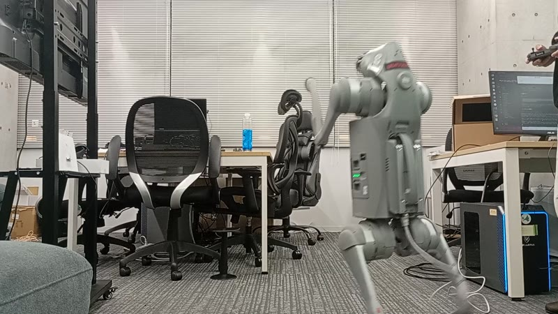
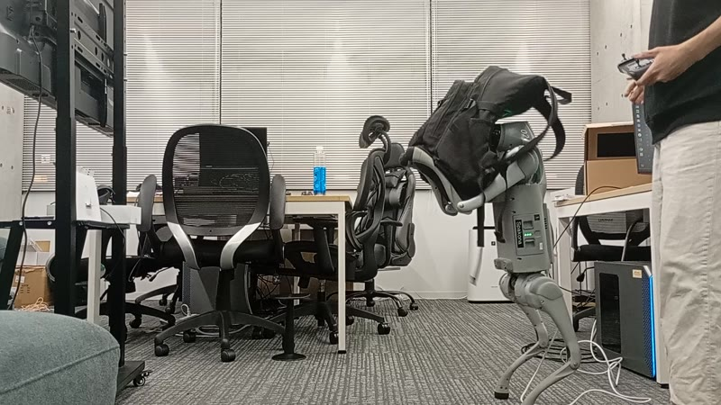
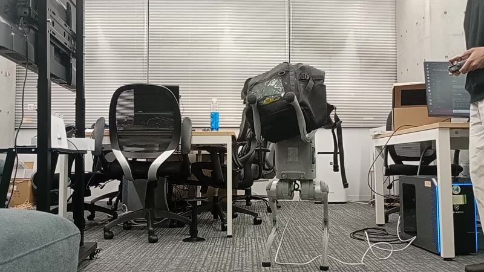
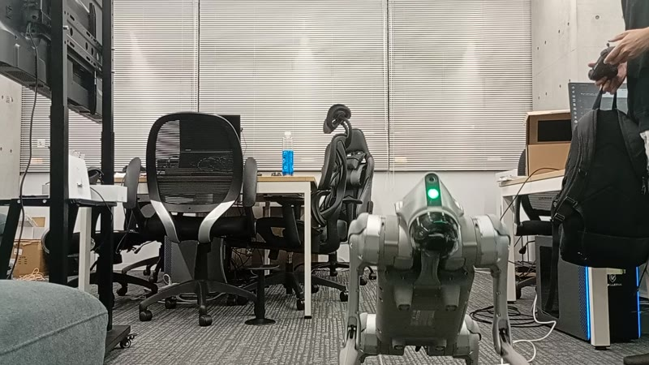
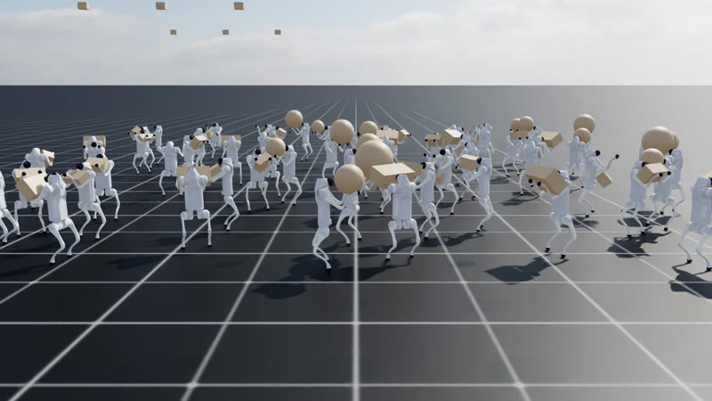
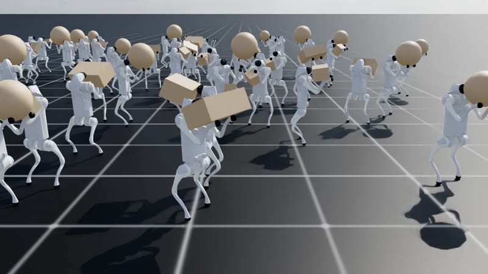
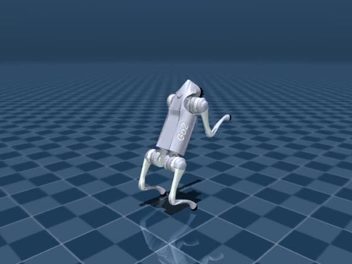

実機の Unitree Go2 です。荷物は、500 mL の水 4 本を入れたカバンです。学習で使った荷物は箱と球だけで、カバンは学習していない形です。
四足ロボット Unitree Go2 が後ろ足だけで立ち、空いた前足を「腕」として使って、人から渡された荷物を前腕で受け止め、持ったままリモコンで指示した方向へ運ぶタスクを、強化学習で実現しました。荷物の重さや形はロボットに知らせません。方策が見るのは関節の角度・速さと IMU の履歴だけで、荷物が載ったことも、その重さも、体の動きから自分で読み取って姿勢を保ちます。
Isaac Lab で 4096 台を並列に学習し、別の物理エンジン MuJoCo、実機と同じ通信のシミュレーターで確かめたあと、実機に載せました。実機では、後ろ足での立ち上がり 11 回、二足で約 11 分、荷物を持って約 3 分動かし、水 2 L 入りの、学習していない形のカバンを受け取って、持ったまま旋回・前後・横に移動しました。
| 項目 | 内容 |
|---|---|
| 方策の観測 | 胴体の角速度、重力の向き、速度の指令、関節の角度・速さ、前回の行動、歩容の時計、四足か二足かのモード。5 ステップの履歴。荷物の情報は入れない |
| 価値関数の観測 | 上に加えて、胴体の速度、関節の摩擦・慣性などの本当の値。非対称 actor-critic |
| 行動 | 12 関節の目標角度。既定の姿勢からのずれ × 0.25。PD ゲイン 30 / 0.75 |
| ネットワーク | 方策と価値関数とも MLP 512-256-128。学習率は KL に合わせて自動で調整 |
Go2 の二足歩行の公開実装 go2_quad2hand は、前足で立つ逆立ち歩行です。報酬・PD ゲイン・ランダム化・歩容を項目ごとに比べた表を作り、立つ脚と自由な脚を入れ替えて、後ろ足で立つ形に読み替えました。比較表は go2_carry/refwalk_env_cfg.py の冒頭にあります。歩容は周期 0.4 秒で、止まっていても足踏みします。この歩容が、荷物を受け止めても倒れない安定の土台になりました。6 章の表の 1 行目を見てください。
床の摩擦、胴体の重さ −1〜+2 kg、重心、押し、PD ゲイン、足のねじれの摩擦、モーターの強さ ×0.8〜1.5、実機の Go2 で測った関節の摩擦と膝の慣性をランダムに変えます。加えて、左右反転のデータ拡張で左右対称な歩き方にしました。どれを入れたかは、6 章の失敗から決めています。
参考実装と同じく、1 つの方策に四足か二足かのモードを観測として与え、モードごとに報酬を切り替えて学習しました。二足で立ち上がる動きは方策が覚えました。四足に下りる動きは覚えなかったので、決めた動きで補っています。
deploy/go2_real.py:組み込みの制御を止めて、低レベル制御に切り替えます。select で非常停止を確かめ、start で四足で立ち、A か十字キー上で二足、十字キー下で四足に戻ります。deploy/sim_dds.py:実機と同じ DDS のメッセージで動く MuJoCo に、リモコン操作の台本を送り、制御プログラムをそのまま通しで試験しました。三足の別の方策を実機で初めて動かしたときに見つかった「止めたあと再開すると崩れる」不具合も、ここで再現して直しました。何度も失敗し、原因を突き止めて乗り越えました。主なものを表にまとめます。
| 失敗 | 原因 | 対策 | 結果 |
|---|---|---|---|
| 物を持つと、膝をついて体を支える | 止まるときは両足をつく、独自の歩容 | 常に足踏みする参考実装の歩容に合わせ、作り直した | 2 kg を持って立つとき、膝をつく割合 94% → 0% |
| 後ろ足の負荷の罰則を、膝を伸ばし切ってすり抜けた | 可動域の端に体重を預けると、トルクがほぼ 0 になる | 可動域の端に近づくことに罰則を足した | 膝のトルクの2乗平均 19.9 → 11 Nm。MuJoCo でも倒れない |
| MuJoCo で旋回が指示の半分 | 足のねじれの摩擦が、学習になかった | ねじれの摩擦をランダム化 | MuJoCo の旋回 55% → 81% |
| MuJoCo で、立ち上がった直後に後ろへ倒れる | モーターの特性と、実測の膝の慣性が学習の範囲の外 | モーターの強さと、実機で測った関節の値をランダム化 | 実測の関節を入れても倒れない |
| 四足に下りる動きを、方策が覚えない | 4 通りの設定・約 2600 回の学習でも、立った姿勢から抜け出さない | 関節を 0.5 秒で四足の姿勢へ動かす、決めた動きで補った | MuJoCo で 36 回中 36 回成功、実機でも成功 |
| 実機で、指示なしでも前へ進む | 立っているときの傾きが、シミュレーターより約 2.5° 前寄り。MuJoCo で 3° のずれが 0.3 m/s の流れになると確認 | 方策に渡す傾きを補正。立ってから 3 秒かけて入れる | 流れはほぼ止まった。少し前後に揺れる癖は残る |
| 実機で、急に後退へ切り替えて転倒 | 学習では指示が 10 秒ごとにしか変わらない | 前進の上限を後退と同じ 0.64 m/s に下げた | 以後、急な切り替えによる転倒はない |
方策は HoldBall c10 です。決まった大きさの箱 8 種類と球 3 種類を、条件ごとに 192 台で評価しました。1 種類あたり 16〜18 台です。「広い箱」は前腕の両方にまたがる箱 b0〜b3 です。小さい箱 b5・b7 は、約 22 cm の腕の間隔より狭い箱です。実機に載せた方策 HoldBall-Switch c1 は、この c10 を実測の関節と切り替えで追加学習したもので、物を持つ成績は c10 とほぼ同じです。
| 条件:荷物 2 kg | 転倒 | 広い箱 b0–b3 | 球 30 cm | 球 36 cm | 球 44 cm | 小さい箱 b5 / b7 |
|---|---|---|---|---|---|---|
| そっと置く | 0% | 0% | 0% | 0% | 6% | 89 / 83% |
| 1.5 秒かけて渡す | 0% | 3% | 0% | 0% | 6% | 78 / 72% |
| 10 cm の高さから落とす | 0% | 1% | 0% | 0% | 6% | 78 / 100% |
| 急に取り去る | 0% | 0% | 0% | 0% | 0% | 83 / 61% |
| 3 kg / 4 kg / 5 kg をそっと置く | 0 / 0 / 0% | 0 / 0 / 1% | 0 / 25 / 81% | 0 / 0 / 19% | 0 / 25 / 50% | 94–100% |
| 持って前進 0.3 / 0.6 / 0.9 m/s | 0% | 1 / 1 / 0% | 0% | 0% | 6 / 0 / 0% | 67–94% |
| 持って後退 0.3・横 0.2・旋回 ±0.5 | 0% | 0–1% | 0% | 0% | 0–12% | 78–100% |
実測の関節の値を入れた MuJoCo でも倒れず、指示の方向へ歩けました。前進の指示 0.4 m/s に対して 0.27 m/s です。



| 項目 | 結果 |
|---|---|
| 二足で立つ・歩く | 後ろ足での立ち上がり 11 回、二足で合計約 11 分。リモコンで前後・横・旋回 |
| 荷物 | 水 2 L 入りの、学習していない形のカバンを受け取り、合計約 3 分持った。持ったまま旋回・前後・横移動 |
| 荷物による揺れ | 止まって立つときの傾きの標準偏差は、前後 0.49° → 0.72°、左右 0.28° → 0.40°。平均の傾きは変わらない |
| 切り替え | 十字キーで二足 ↔ 四足。荷物を取ってから四足に下りて休む |
| モーターの温度 | 最高 46 °C。自動で四足に下りる 70 °C には届かない |
RELATED_WORK.md にあります。go2_carry/ は環境・報酬・カリキュラム、scripts/ は学習・評価、deploy/ は実機の制御プログラムと検証用のシミュレーターです。